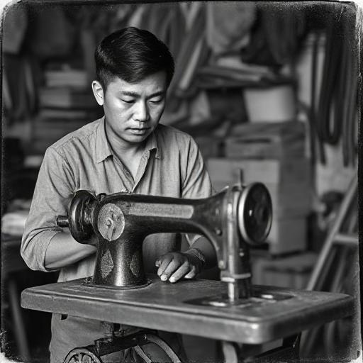
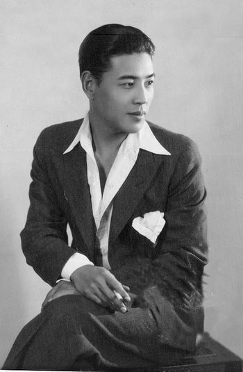

"THE ARTISTRY OF TIMELESS ELEGANCE"
1972
FIRST VISION
CHRISTIAN WIJAYA BEGAN HIS JOURNEY IN A MODEST GARAGE WITH ONLY DETERMINATION AND AN EYE FOR ELEGANCE. USING BORROWED TOOLS, HE CRAFTED HIS FIRST DESIGNS WITH UNCOMPROMISING STANDARDS. THIS HUMBLE BEGINNING EVOLVED INTO A GLOBAL LUXURY BRAND REDEFINING CRAFTSMANSHIP.
1972-1978
WANDERING AROUND
CHRISTIAN'S EARLY YEARS WERE DEDICATED TO TRAVEL THROUGHOUT ASIA AND EUROPE, IMMERSING IN DIVERSE CULTURES AND CRAFTSMANSHIP. THESE JOURNEYS EXPOSED HIM TO TECHNIQUES AND MATERIALS THAT WOULD BECOME BRAND SIGNATURES. FROM KYOTO TO FLORENCE, EACH DESTINATION SHAPED HIS VISION OF LUXURY.
TOUGH TIMES
ADVERSITY SHAPED THE BRAND'S CHARACTER AS CHRISTIAN PERSEVERED THROUGH HARDSHIP AND REJECTION. WHEN FIRE DESTROYED HIS WORKSHOP IN 1976, HE REBUILT FROM ASHES. THESE CHALLENGES FORGED THE RESILIENCE THAT BECAME THE WIJAYA PHILOSOPHY: EXCELLENCE IS NEVER OPTIONAL.
1979

FIRST MASTER PIECE
THE PIVOTAL MOMENT CAME WITH THE CREATION OF THE "CELESTIAL" HANDBAG, COMBINING HAND-STITCHED LEATHER WITH REVOLUTIONARY DESIGN. THIS PIECE ESTABLISHED CHRISTIAN AS A VISIONARY WHO TRANSLATED ARTISTRY INTO FUNCTIONAL LUXURY. THE CELESTIAL REMAINS IN PRODUCTION TODAY—A TESTAMENT TO TIMELESS INNOVATION.
1980

FIRST BOUTIQUE
THE FIRST CHRISTIAN WIJAYA BOUTIQUE OPENED IN AN ELEGANT TOWNHOUSE, DESIGNED LIKE A PRIVATE RESIDENCE RATHER THAN RETAIL SPACE. IT FEATURED HAND-SELECTED FURNISHINGS, CUSTOM LIGHTING, AND DISCREET AREAS FOR BESPOKE CONSULTATIONS. THIS APPROACH BECAME THE TEMPLATE FOR ALL FUTURE LOCATIONS.
1981-1987
EARLY FAME
RECOGNITION CAME AS CULTURAL ICONS EMBRACED THE BRAND, INCLUDING AKIRA KUROSAWA AND ANNA PAVLOVA. CHRISTIAN MAINTAINED HIS FOCUS ON CRAFTSMANSHIP RATHER THAN CELEBRITY ENDORSEMENTS. THIS AUTHENTICITY RESONATED WITH CLIENTS WHO VALUED SUBSTANCE OVER SPECTACLE.
1988
GLOBAL RECOGNITION
INTERNATIONAL RECOGNITION EXPLODED AFTER AN EXHIBITION AT THE MUSEUM OF MODERN ART, WHERE CHRISTIAN'S WORK WAS CELEBRATED AS FUNCTIONAL ART. DESPITE FASHION HOUSES SEEKING COLLABORATIONS, CHRISTIAN MAINTAINED STRICT STANDARDS. THIS PHILOSOPHY ENSURED EACH WIJAYA CREATION REMAINED EXCEPTIONAL.
1989-1995
COPYRIGHT ISSUES
AS THE BRAND GREW, THE DISTINCTIVE WIJAYA AESTHETIC BECAME TARGET OF COUNTERFEITS. CHRISTIAN RESPONDED BY DEVELOPING PROPRIETARY TECHNIQUES THAT COULDN'T BE EASILY REPLICATED. THE HOUSE ESTABLISHED AN AUTHENTICATION DEPARTMENT THAT PIONEERED VERIFICATION METHODS WHILE EDUCATING CLIENTS ABOUT AUTHENTICITY.
1995-1997
ECONOMIC TURMOIL
THE ASIAN FINANCIAL CRISIS TESTED THE BRAND AS LUXURY MARKETS CONTRACTED. CHRISTIAN CHOSE TO SCALE BACK PRODUCTION RATHER THAN COMPROMISE QUALITY. THIS PERIOD INSPIRED THE "ESSENTIAL" COLLECTION—FOCUSING ON EXCEPTIONAL MATERIALS WHILE ELIMINATING EXTRANEOUS ELEMENTS.
NEAR BANKRUPTCY
FACING DEBTS, THE COMPANY NEARED FINANCIAL COLLAPSE WITH INVESTORS PRESSURING CHRISTIAN TO SELL HIS RIGHTS. HE REFUSED, LIQUIDATING PERSONAL ASSETS TO MAINTAIN INDEPENDENCE. THIS COMMITMENT EARNED LOYALTY FROM EMPLOYEES AND CLIENTS WHO PLACED ADVANCE ORDERS TO SUSTAIN OPERATIONS.
1997-PRESENT

RISE OF WIJAYA
EMERGING FROM ADVERSITY, WIJAYA ENTERED A RENAISSANCE MARKED BY BOLD DIRECTION AND STRATEGIC EXPANSION. ARCHITECT TADAO ENDO DESIGNED FLAGSHIP STORES WITH CONCEPTS HARMONIZING WITH THE BRAND'S AESTHETICS. THE HERITAGE FOUNDATION ESTABLISHED COMMITMENTS TO PRESERVING CRAFTSMANSHIP THROUGH APPRENTICESHIPS AND CONSERVATION.
LEGACY AND FUTURE
TODAY, CHRISTIAN WIJAYA STANDS AS BOTH LUXURY HOUSE AND CULTURAL INSTITUTION WITH PRESENCE IN 27 COUNTRIES. THE BRAND BALANCES TRADITION WITH INNOVATION, INTRODUCING SUSTAINABLE PRACTICES THAT SET NEW STANDARDS. THE WIJAYA PHILOSOPHY REMAINS: CREATE PIECES OF SUCH QUALITY AND DESIGN THAT THEY BECOME HEIRLOOMS TREASURED ACROSS GENERATIONS.